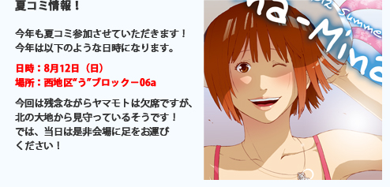
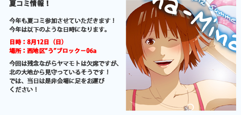

これまでのSnowWhiteの活動をお伝えします。
- 2012.08.01 夏コミ情報！
-
 - 2012.02.21
-
冬コミ受かりました！
配置は「東地区"ヨ"ブロック－34a」となります。
詳細については後日またご連絡いたします。
また皆様とお会いできることを、楽しみにしております。
Copylight (c) 2011 SnowWhite All Rights Reserved.


これまでのSnowWhiteの活動をお伝えします。
|  |
|
冬コミ受かりました！ 配置は「東地区"ヨ"ブロック－34a」となります。 詳細については後日またご連絡いたします。 また皆様とお会いできることを、楽しみにしております。 |
Copylight (c) 2011 SnowWhite All Rights Reserved.